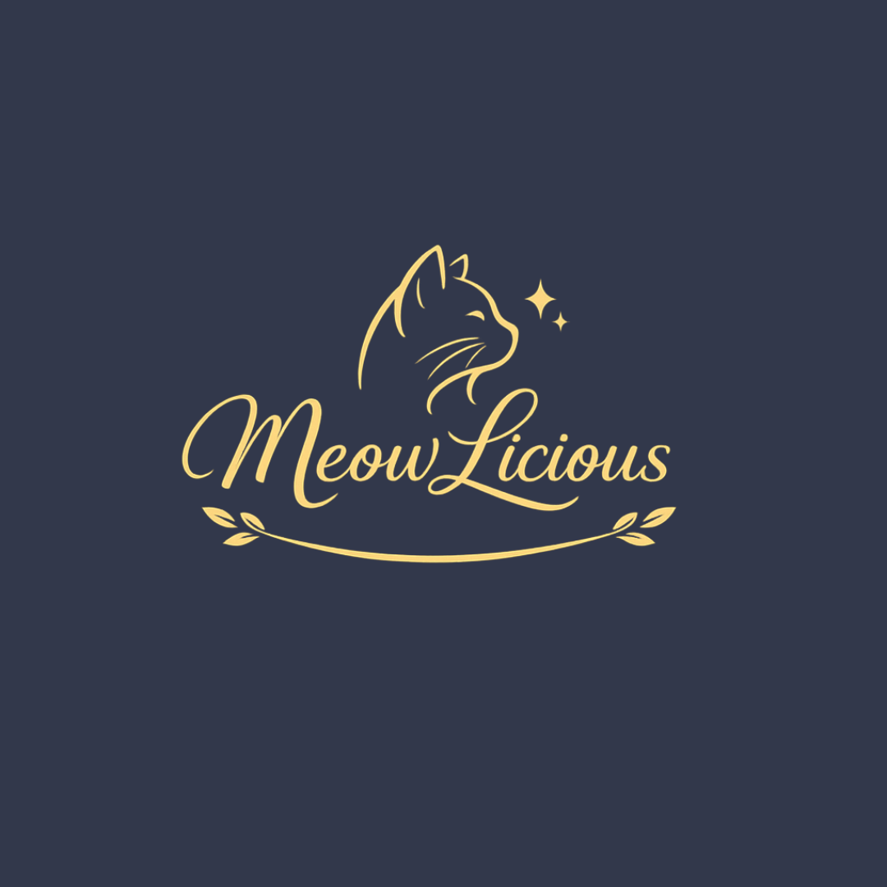
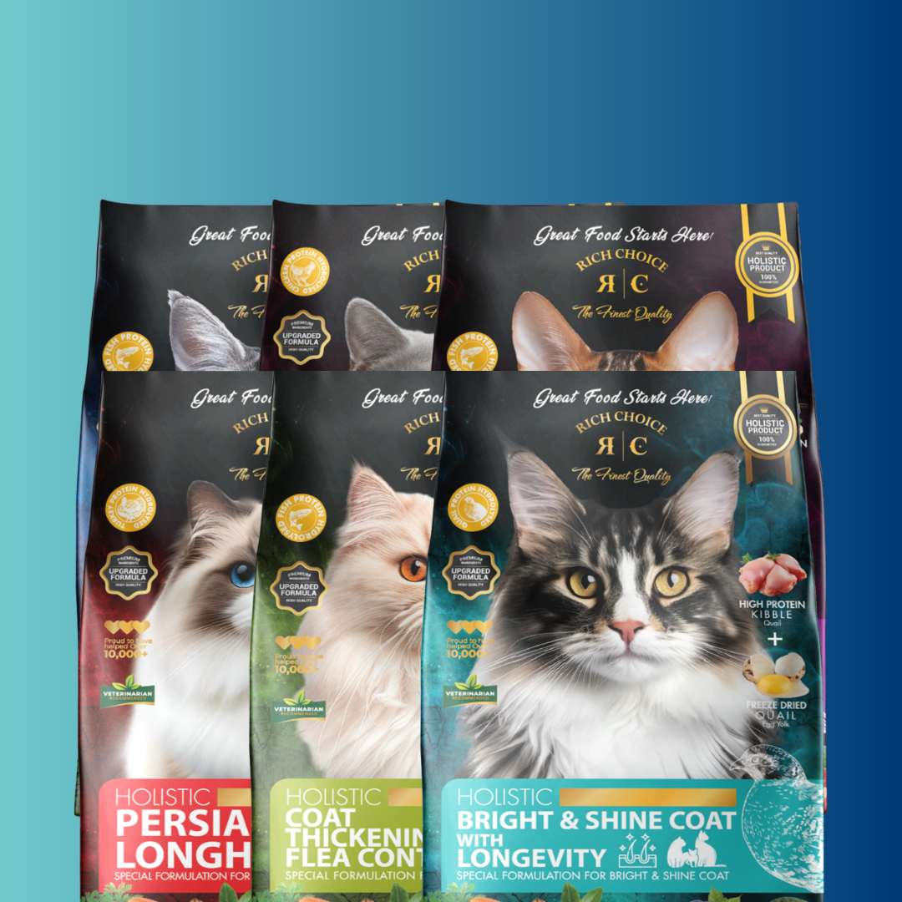

Your one-stop shop for every purr and paw.
We help you find the best things for your furry friend, from nutritious food to essentials. Each product is carefully selected for your cat's health and happiness.

Because every cat deserves premium nutrition and endless love.
More Information